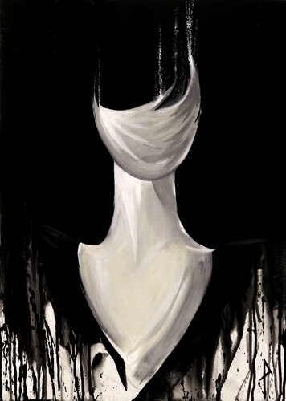
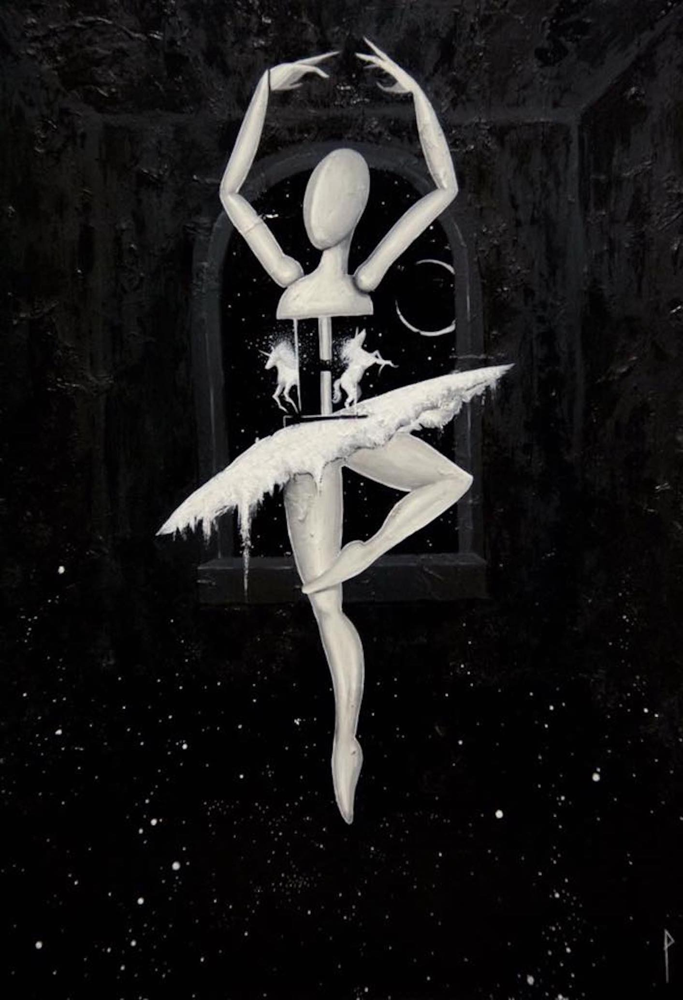

Pietro Tagliabue
Nasce figlio d’arte nel Giugno 88. Guidato dall’ispirazione suscitata da suo nonno Pietro Crescini, che progettò diverse perle dell’architettura italiana come il Piccolo Teatro Strehler, libera la sua natura artistica. Frequenta l’Istituto d’Arte Beato Angelico di Milano, decorazione pittorica, dove si diploma in Maestro d’Arte. Prosegue sulla via della pittura e dello studio della figura, esponendo le sue opere in eventi internazionali di arte contemporanea e gallerie d’arte. Ama la tecnica del bianco nero, suggestiva, malinconica, che enfatizza i contrasti e ricerca un concetto di realismo che va oltre al soggetto stesso, alla sua anima, al suo ambiente, che lo trasforma in surrealismo, libero all’immaginazione e alla tensione del tratto nella sua momentanea natura emotiva, lasciando respirare le forme che compongono l’immagine a volte sintetizzandole a dei canoni personali riconoscibili. La pittura è il mezzo con cui porta alla realtà tutto ciò che è insito nell’anima rendendola libera.
 